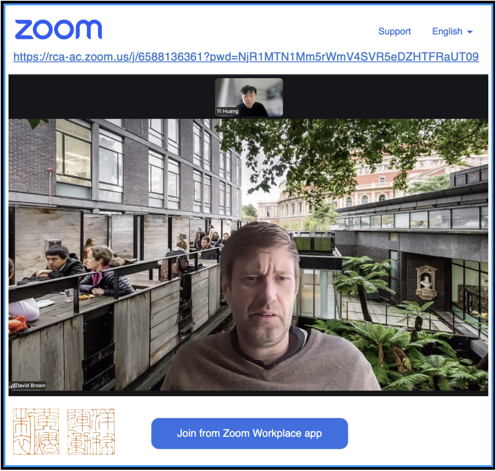
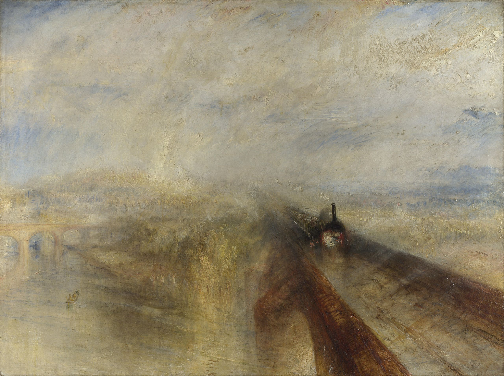
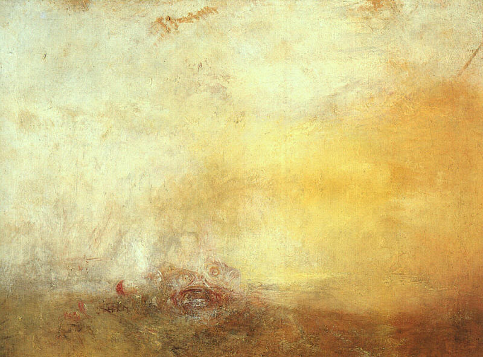
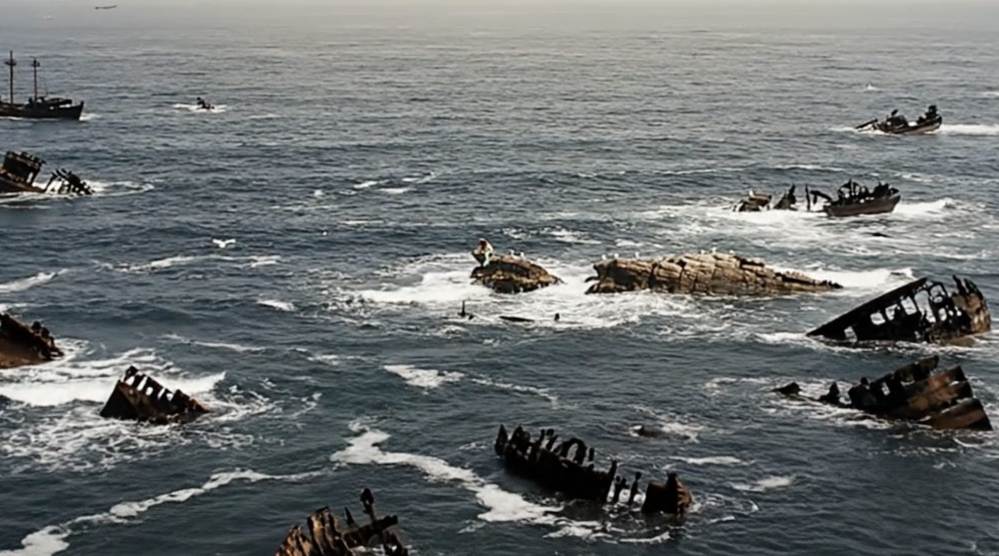

ABOUT
Film
Telecommunication & Analogue
Digital Media Ontology Series
Digital Media Ontology Series
Producer: Yi Huang
Content: In 1876, the first cohort of Westernisation scholars travelled to Britain to study telegraph technology; in 2025, self-funded students from the People's Republic journeyed to Britain to study contemporary art practice.
Time misaligns at Loch Ken in southern Scotland, where they intertwine into an invisible field, soaring through the air. The spark plug forgotten in Patton Church still flickers incessantly, yet this time it does not serve as proof of existence, but rather presents an elusive, indecipherable interlude of long and short waves.
Unrevealed realities shatter the imagination of personal pilgrimage. That frequency band, concealed within the opening lines of verse, carries the carrier wave transmitted to Denmark's Great Northern Radio Station. Only those from JJ Thomas Avenue possess the means to demodulate it...

独立影像
数字媒介本体系列分章
媒介历史-通信
制作人：黄熠
一八七六，首批洋务学子赴英学习有线电报技术，二零二五，共和国自费留学生赴英学习当代艺术实践。时间在南苏格兰的肯湖错位，它们交织成无形的场域自空气中遨游，被遗忘在帕顿教堂的火花塞仍在不停闪烁，但此次它不是表现存在的证明，而是呈现着似有似无不可知的长短波间奏。未公开的现实把个人朝圣的想象击碎，那段藏在诗句开头的频段流通着发射至丹麦大北无线电装置里的载波，能够解调它的人只来自于JJ托马斯大道……





自检：现在正在努力筹备中，这是一封我写给模拟时代的诀别信，从今往后，笑着面对！
Self Reflection: .......
© 2026 All Rights Reserved.